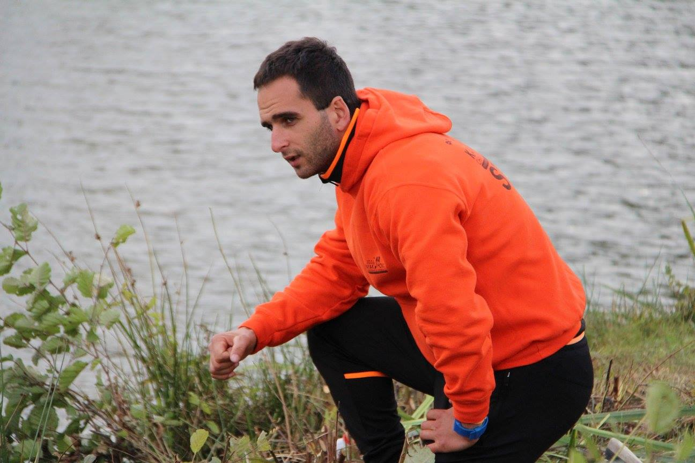

Une vision du sport de haut-niveau par un praticien assidu
X
Le sport de haut niveau est un modèle parmi d'autres inspirant les pratiques agiles. Mais lorsque l'on évoque la performance collective, ce modèle devient d'autant plus inspirant.Nous vous proposons donc de recueillir le retour croisé de Camille - sportif & entraîneur évoluant dans le haut niveau depuis près de 10 ans - et Guillaume - ancien sportif, aujourd'hui architecte fonctionnel / pompier projet - depuis leur sport commun : le Kayak Polo.Au cours de cette conférence, nous vous parlerons : performance collective, équipe, profils, rôles, valeurs, ... et adaptation dans des contextes de projets informatiques.
Guillaume Poupa, 32 ans, je suis architecte fonctionnel chez Orange Business Services depuis 10 ans. Touche à tout sportif, j'ai pratiqué le kayak polo pendant 15 ans, côtoyant et affrontant Camille - à l'époque - aux portes du haut-niveau et l'encourageant lors de ses premiers pas en équipe de France. J'interviens aujourd'hui sur les projets dans un rôle de "pompier" où face aux difficultés d'une équipe, j'apporte mon expertise méthodologique et le résultat de mon expérience, forgée par mon vécu et mes observations tant sportifs que professionnels.
C'est donc tout naturellement qu'au détour d'une station essence, j'ai croisé Camille et lui ai demandé "tu connais l'agile tour, ..."

Camille Richer
Camille Richer, 27 ans, je suis professeur de sport diplômé de l'INSEP (PSHN) détaché auprès de la fédération française de Canoë Kayak en tant que Conseillé Technique Régional. En parallèle, je poursuis ma carrière d'entraineur/joueur de kayak polo au Club de Saint-Grégoire au plus haut niveau. J'accompagne également les athlètes de ma fédération dans leurs préparations physiques et mentales toutes disciplines confondues.


 Fany Berthelot -
Fany Berthelot -  Jean-François Palmier -
Jean-François Palmier -